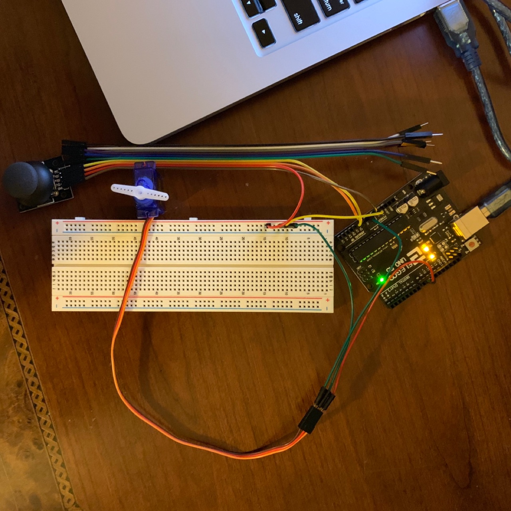
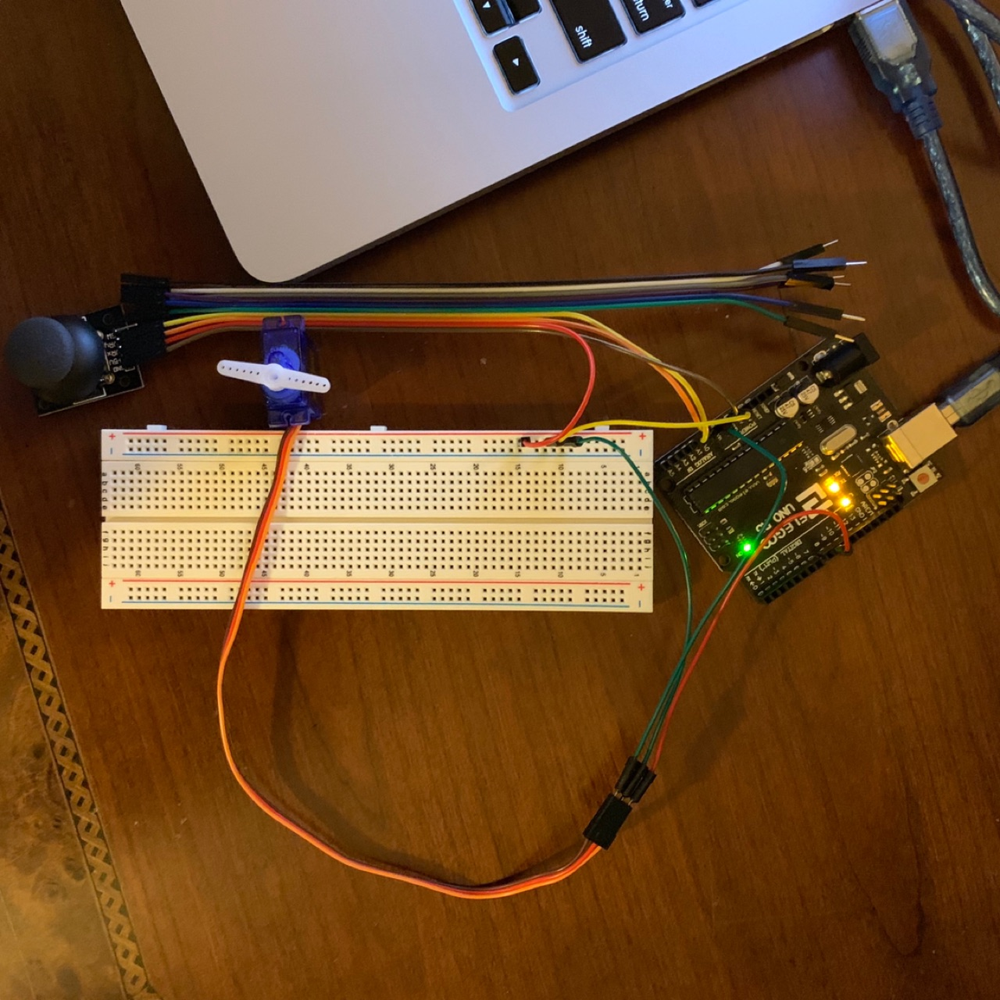
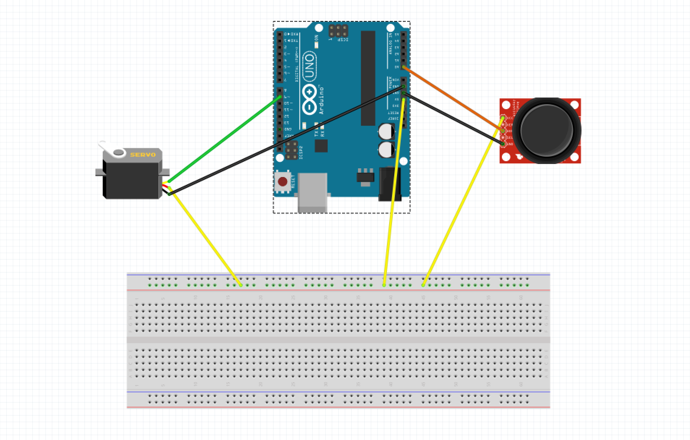
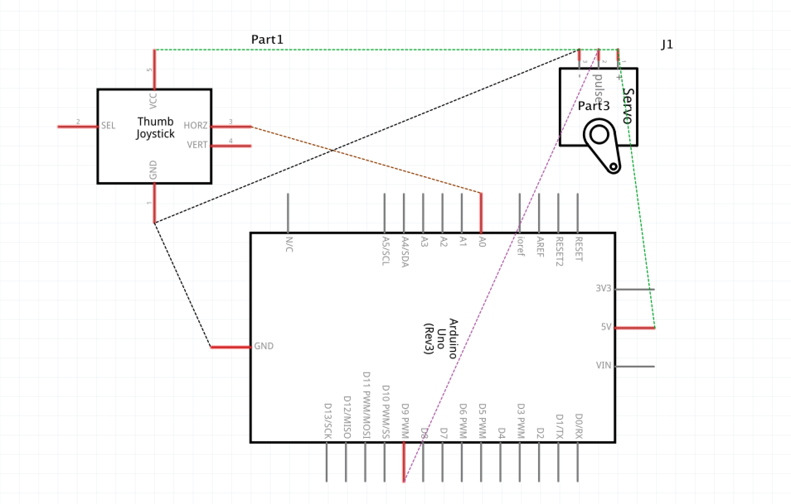
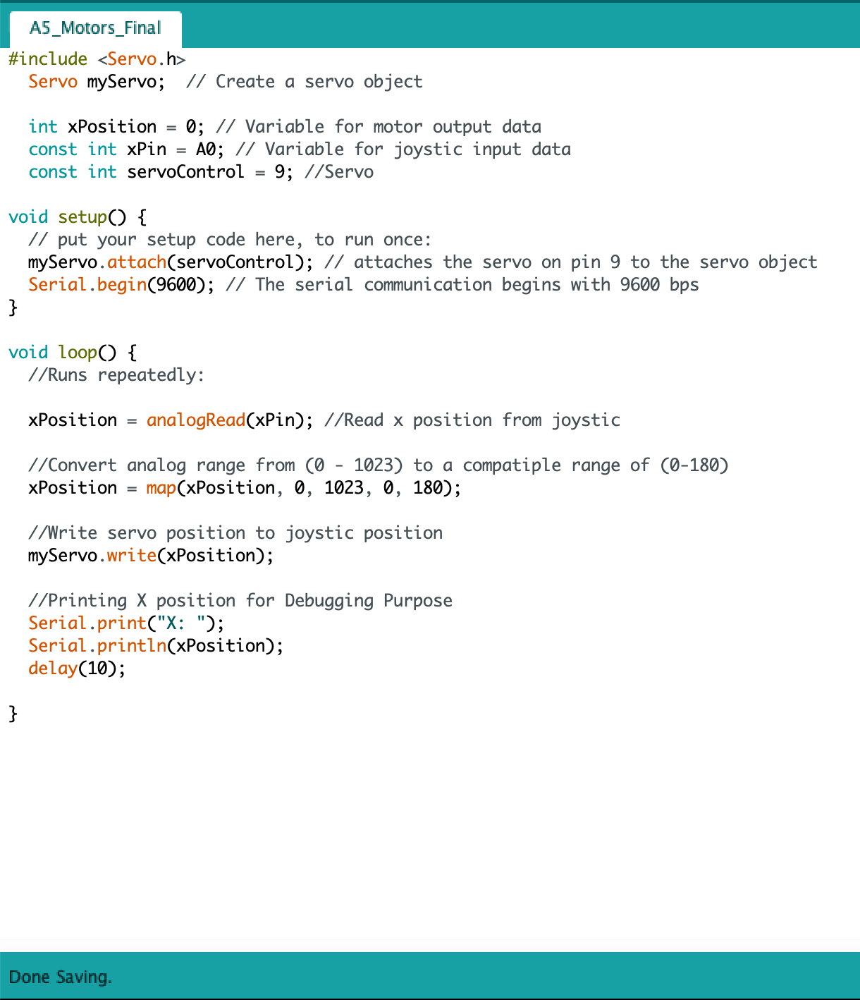

Natty's A5: Motors!
The prompt was to create a schematic, circuit, and code that uses a joystick to control a motor! Checkout my work below!
Here's a picture

Here's it in action

The prompt was to create a schematic, circuit, and code that uses a joystick to control a motor! Checkout my work below!
Here's a picture

Here's it in action
 
I converted the anolog read variable, which is in a range from 0-1023, to 1-180.
